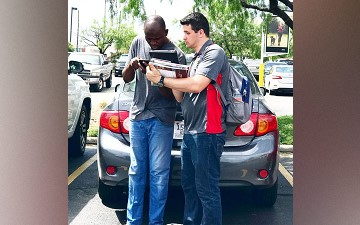

SWORD Program
The SWORD program was a unique combination of Literature Evangelism (aka Canvassing), and Church Planting. Canvassing took place over breaks and was the focus of this program as it provided real life skills in ministry with a hyper-focused purpose of spreading Adventist Christian Literature.
Canvassing
The Canvassing program was much like a missionary retreat, but often remains local. My first Canvassing experience was during an 11-week summertime mission in Houston, Texas. Here we practiced hands on street level ministry, cooking, cleaning, inventory management, and systematic missions through the streets of Houston. It was an amazing experience that I continue in my personal life today.

Witnessing
Being on the streets with the people provided opportunities to be challenged with every different religious belief known today. Although this was not our primary focus, the opportunity to learn and grow in my understanding always presented itself. I made many new friends from different belief systems and am more equipped than ever to defend the reliability of the Gospel of Jesus Christ.
Church Planting
As a secondary project of the SWORD program was the opportunity to travel to a local church on weekends during the school year with the purpose of sharing Bible studies within the local community. After church service a small group of us would divide up the neighborhoods and knock on doors to seek anyone interested in having Bible studies. It was a nice opportunity for students to learn how to witness their faith. The hopes were to eventually pass the contacts on to the church memebers who could then engage in church growth.
Leadership Oppurtunities
It was here that I received further specialized training for community outreach. Both for Church Planting and for Literature Evangelism. We would train weekly and share testimonies together as to continually grow and improve our witnessing efforts.
Discipleship
Along the way I’ve been able to mentor individuals with what I’ve learned through practical experience. It’s a blessing to learn, and an even bigger blessing to teach. Watching others grow and develop is a special experience that I will always cherish.
{kind=link}
{kind=link}
{kind=link}
{kind=link}
{kind=link}
{kind=link}